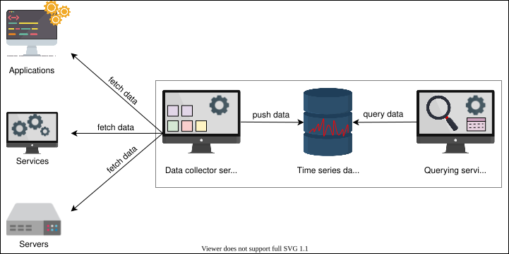
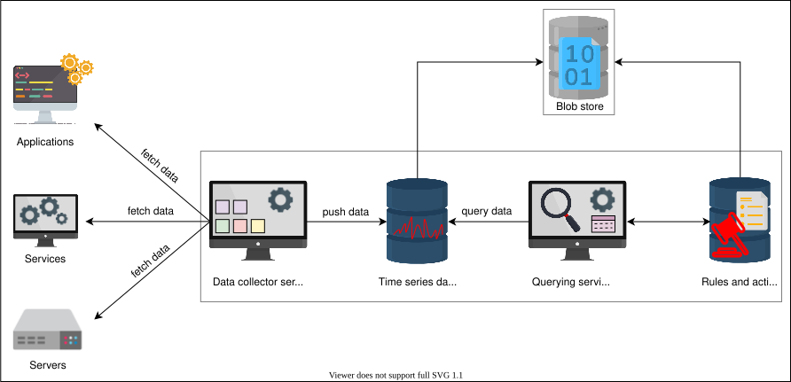
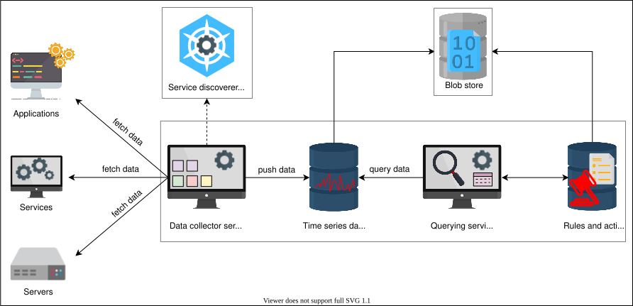
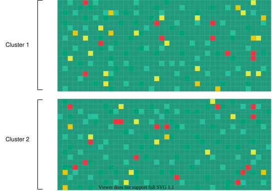

14. Monitor Server-side Errors
Design of a Monitoring System
Design of a Monitoring System
Learn about the initial design of a generic monitoring system.
We'll cover the following
Requirements#
Let’s sum up what we want our monitoring system to do for us:
-
Monitor critical local processes on a server for crashes.
-
Monitor any anomalies in the use of CPU/memory/disk/network bandwidth by a process on a server.
-
Monitor overall server health, such as CPU, memory, disk, network bandwidth, average load, and so on.
-
Monitor hardware component faults on a server, such as memory failures, failing or slowing disk, and so on.
-
Monitor the server’s ability to reach out-of-server critical services, such as network file systems and so on.
-
Monitor all network switches, load balancers, and any other specialized hardware inside a data center.
-
Monitor power consumption at the server, rack, and data center levels.
-
Monitor any power events on the servers, racks, and data center.
-
Monitor routing information and DNS for external clients.
-
Monitor network links and paths’ latency inside and across the data centers.
-
Monitor network status at the peering points.
-
Monitor overall service health that might span multiple data centers—for example, a CDN and its performance.
We want automated monitoring that identifies an anomaly in the system and informs the alert manager or shows the progress on a dashboard. Cloud service providers provide a health status of their services:
Building block we will use#
The design of distributed monitoring will consist of the following building block:
Blob storage: We’ll use blob storage to store our information about metrics.

High-level design#
The high-level components of our monitoring service are the following:
-
Storage: A time-series database stores metrics data, such as the current CPU use or the number of exceptions in an application.
-
Data collector service: This fetches the relevant data from each service and saves it in the storage.
-
Querying service: This is an API that can query on the time-series database and return the relevant information.

Let’s dive deep into the components mentioned above in the next lesson.
Detailed Design of a Monitoring System
Detailed Design of a Monitoring System
Learn the details of designing a monitoring system and understand its pros and cons.
We’ll discuss the core components of our monitoring system, identify the shortcomings of our design, and improve the design to fulfill our requirements.
Storage#
We’ll use time-series databases to save the data locally on the server where our monitoring service is running. Then, we’ll integrate it with a separate storage node. We’ll use blob storage to store our metrics.
We need to store metrics and know which action to perform if a metric has reached a particular value. For example, if CPU usage exceeds 90%, we generate an alert to the end user so the alert receiver can do take the necessary steps, such as allocate more resources to scale. For this purpose, we need another storage area that will contain the rules and actions. Let’s call it a rules databse. Upon any violation of the rules, we can take appropriate action.
Here, we have identified two more components in our design—that is, a rules and action database and a storage node (a blob store).

Data collector#
We need a monitoring system to update us about our several data centers. We can stay updated if the information about our processes reaches us, which is possible through logging. We’ll choose a pull strategy. Then, we’llextract our relevant metrics from the logs of the application. As discussed in our logging design, we used a distributed messaging queue. The message in the queue has the service name, ID, and a short description of the log. This will help us identify the metric and its information for a specific service. Exposing the relevant metrics to the data collector is necessary for monitoring any service so that our data collector can get the metrics from the service and store them into the time-series database.
A real-world example of a monitoring system based on the pull-based approach is DigitalOcean. It monitors millions of machines that are dispersed globally.
Point to Ponder
Question
What are some drawbacks of using a push-based approach?
Service discoverer#
The data collector is responsible for fetching metrics from the services it monitors. This way, the monitoring system doesn’t need to keep a track of services. Instead, it can find them using discoverer service. We’ll save the relative information of the services we have to monitor. We’ll use a service discovery solution and integrate with several platforms and tools, including EC2, Kubernetes, and Consul. This will allow us to discover which services we have to monitor. Similar dynamic discovery can be used for newly commissioned hardware.
Let’s add our newly identified component to our existing design.

Querying service#
We want a service to access the database and fetch the relevant query results. We need this because we want to view the errors like values of a particular node’s memory usage, or send an alert if a metric exceeds the set limit. Let’s add the two components we need along with querying.
Alert Manager#
The alert manager is responsible for sending alerts upon violations of set rules. It can send alerts as an email, a Slack message, and so on.
Dashboard#
We can set dashboards by using the collected metrics to display the required information—for example, the number of requests in the current week.
Let’s add the components discussed above, which completes our design of the monitoring system.

Our all-in-one monitoring service works for actively tracking systems and services. It collects and stores data, and it supports searches, graphs, and alerts.
Pros#
- The design of our monitoring service ensures the smooth working of the operations and keeps an eye on signs of impending problems.
-
Our design avoids overloading the network traffic by fetching the data itself.
-
The monitoring service provides higher availability.
Cons#
-
The system seems scalable, but managing more servers to monitor can be a problem. For example, we have a dedicated server responsible for running the monitoring service. It can be a single point of failure (SPOF). To cater to SPOF, we can have a failover server for our monitoring system. Then, we also need to maintain consistency between actual and failover servers. However, such a design will also hit a scalability ceiling as the number of servers further increase.
-
Monitoring collects an enormous amount of data 24/7, and keeping it forever might not be feasible. We need a policy and mechanisms to delete unwanted data periodically to efficiently utilize the resources.
Let’s think of a way to overcome the problems with our monitoring service.
Improving our design#
We want to improve our design so that our system can scale better and decide what data to keep and what to delete. Let’s see how the push-based approach works. In a push-based approach, the application pushes its data to the monitoring system.
We used a pull-based strategy to avoid network congestion. This also allows the applications to be free of the aspect that they have to send the relevant monitoring data of to the system. Instead, the monitoring system fetches or pulls the data itself. To cater to scaling needs, we need to apply a push-based approach too. We’ll use a hybrid approach by combining our pull-based strategy with the push-based strategy.
We’ll keep using a pull-based strategy for several servers within a data center. We’ll also assign several monitoring servers for hundreds or thousands of servers within a data center—let’s say one server monitoring 5,000 servers. We’ll call them secondary monitoring servers.
Now, we’ll apply the push-based strategy. The secondary monitoring systems will push their data to a primary data center server. The primary data center server will push its data to a global monitoring service responsible for checking all the data centers spread globally.
We’ll use blob storage to store our excessive data, apply elastic search, and view our relevant stats using a visualizer. As our servers or data centers increase, we’ll add more monitoring systems. The design for this is given below.
Note: Using a hierarchy of systems for scaling is a common design pattern in system design. By increasing nodes on a level or introducing additional levels in the hierarchy, we get the ability to scale according to our current needs.
Points to Ponder
Question 1
What happens if a local or global monitoring system is down?
1 of 2
Humans need to consume enormous amounts of data, and even after different kinds of data summarizations, the data can still be huge. Next, we’ll tackle how to present enormous data to human administrators.
Visualize Data in a Monitoring System
Visualize Data in a Monitoring System
Learn a novel way to visualize an enormous amount of monitoring data.
We'll cover the following
Large data centers have millions of servers, and visualizing the health data for all of them is challenging. An important aspect of monitoring a fleet of servers is to know which ones are alive and which ones are offline. A modern data center can house many thousands of servers in a building. We can use a heat map to display information about thousands of servers compactly in a data center.
A heat map is a data visualization technique that shows the magnitude of a phenomenon in two dimensions by using colors.
Using heat maps to troubleshoot#
We’ll identify if a server is down by using heat maps. Each rack of servers is named and is sorted by data center, then cluster, then row, so problems common at any of these levels are readily apparent.
A heat map depicting the operational state of a large number of components is an effective method. The health of each component is indicated by the color of each cell in a big matrix. Nodes with green cells operate within permitted parameters, while nodes with red cells are nonresponsive on multiple tries.
Below, we have a heat map displaying the server’s state.

We can use heat maps for the globally distributed systems and continuously share the health information of a server. We can use one bit (one for live, zero for dead). For 1,000,000 servers, we have 125 KB of data. We can quickly find out which server is down by the red color and focus on the problematic parts.
We can create similar heat maps to get a bird’s-eye view of any resource, like filesystems, networking switches, links, and so on.
Summary#
-
Monitoring systems are critical in distributed systems because they help in analyzing the system and alerting the stakeholders if a problem occurs.
-
We can make a monitoring system scalable using a hybrid of the push and pull methods.
-
Heat maps are a powerful tool for visualization and help us learn about the health of thousands of servers in a compact space.